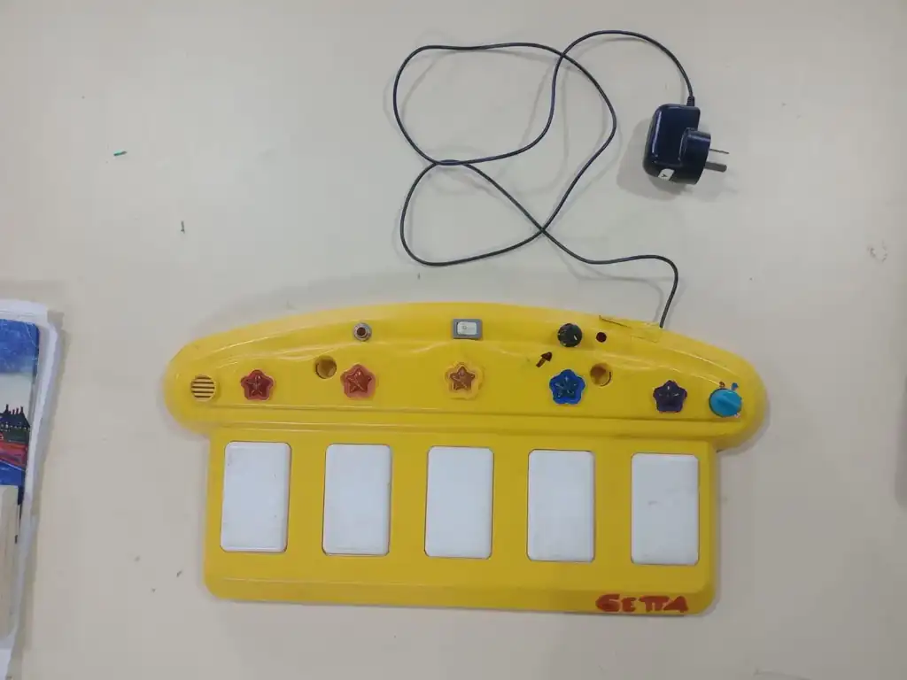
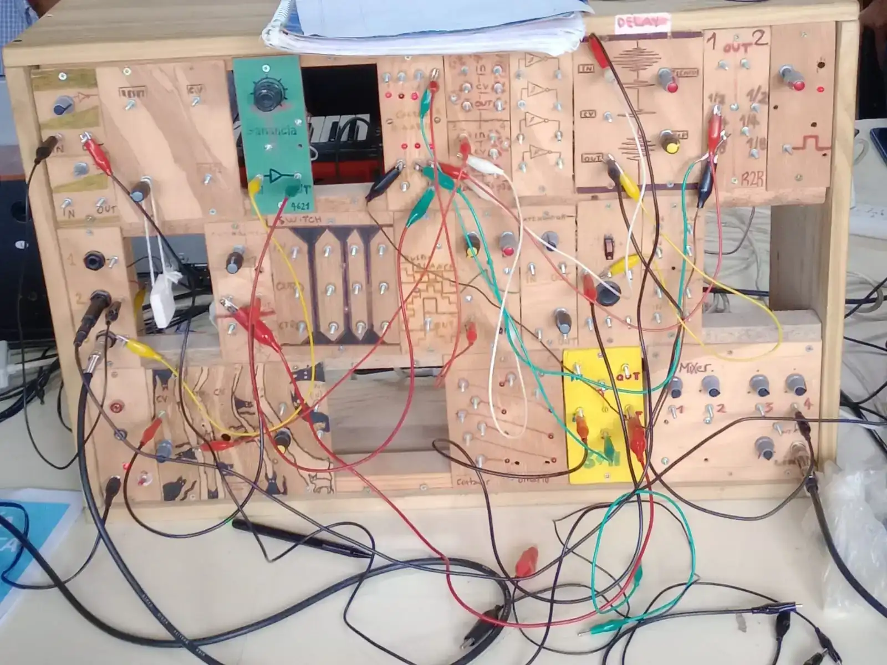

Instrumentos
Getta

El "Getta" (Bautizado asi por Samuel ) es un teclado de juguete modificado para tener salida de audio, fuente de alimentacion externa y un control de afinacion.
El modular

Lo que siempre llamamos "el modular" es un sintetizador modular cmos que tiene:
- 3 osciladores controlados por voltaje.
- 1 reloj.
- 2 contadores binarios.
- 1 eco controlado por voltaje.
- 1 mixer.
- 4 interruptores controlados por voltaje.
- 4 low pass gates pasivos.
- Filtros pasivos.
- 2 R2R.
- 3 Amplificadores.
- 2 sample and hold.
- 1 Generador de envolvente (AD)
- 2 interruptores manuales
Los módulos fueron armados por distintas personas en distintos momentos alrededor del 2022/2023 y se puede escuchar en "Cazando búfalos en el norte Vol1". Varios de los diagramas de los módulos se pueden encontrar en la seccion Circuitos.